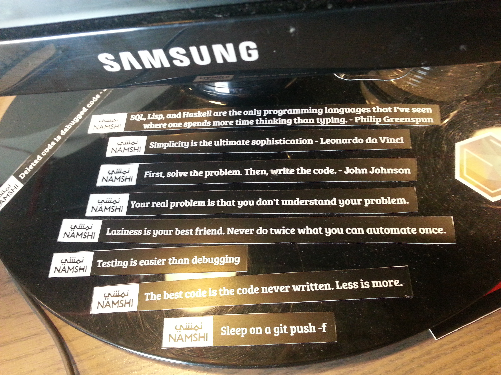

Git Flow
Branch it, tag it, release it, merge it
Geshan Manandhar
Quality and Maintenance Lead, Namshi.com
@geshan
geshan.com.np
Index
- Prerequisites
- Start a feature or bug fix on a new branch
- Work done, lets push
- Pushed the code? Let's open a merge/pull request
- Team Lead reviews code
- After review is ok, code is deployed to staging then live
- How to name tags
- Merge the tag to master when all tests are fine
- Things to consider
- Conclusion
Prerequisites
- You are aware of what git is, what it does and its benefits
- You know about basic git commands like add, commit, branch etc
- Master is the stable branch which can be deployed anytime
- You have already watched the git happens video.
Start a feature or bug fix on a new branch
- Always follow a naming convention when create new branch
- Like: OP-21 (where OP is short for OpenData and 21 is the ticket id from redmine/trello)
- Always get the latest master branch before you start any issue
- By typing: git checkout master && git fetch && git pull --rebase origin master
- Then get a branch out of the latest master
- The command will be: git checkout -b OP-21
- Now you can start working onf OP-21 - add blog content type
Work done, lets push
- So you finished working on OP-21
- Then you do the following to commit the changes:
- git add .
- git add -u - if files have been deleted
- git commit - then write a commit message
- Keep in mind commit messages need to be meaningful
- You can do multiple logical commits.
- git push origin OP-21
Pushed the code? Let's open a merge/pull request
- It is recommended that you squash your commits to single one
- To a merge request, always get latest master then rebase your branch
- Be in your branch git checkout OP-21, then execute: git rebase master.
- As you just rebased with master, you may need to force push : git push -f origin OP-21
- Browse to gitlab open a merge request
- Put the issue in right status/column on redmine/trello and put the merge request link in the comment.
Team Lead reviews code
- Team/Project Lead should always check and review code for each pull/merge request
- Code review is done to ensure coding standards, coding and naming conventions.
- It is also done to ensure code is maintainable on the long run.
- If there are comments, it needs to be addressed by the software engineer by re-working.
- If the code matches standards, does the work and tests are passing it can be deployed.
After review is ok, code is deployed to staging then live
- First deployed to Staging
- For staging, its ok to deploy the branch with a deployment process.
- If all tests are fine, then code is deployed to live.
- For live/productions, always create a tag and deploy the tag
- Given you are on OP-21 branch, execute git tag 1.11.2
- Then push the tag: git push origin 1.11.2 and deploy it live
Merge the tag to master when live is stable
- After testing and monitoring the live deployment, tag can be merged to master
- To merge the tag to master, get the latest master
- Then run: git merge --no-ff 1.11.2 know why --no-ff
- All the changes that were deployed are in master right now
- Then you can deploy another branch after tagging it.
- Next tag for the same day will be 1.11.2-p0
- Here p0 means patch 0 or 2nd deployment of the day.
Things to consider
- Never force push on master
- You can force push on your branch provided others have not branched out from your branch.
- If tickets/issues are related, you can branch out from a different branch than master
- If you branched out of OP-10, you can send a merge/pull request to OP-10 as well.
- Always align your branch from your source branch which is generally master.
- Hot-fix branches have not been covered.
Conclusion/Recap
- Git flow is easier than it looks, with single ticket deployments.
- Git flow encourages rigorous code reviews.
- It helps to follow a standard procedure.
- Rollbacks are easier as you know the last deployed live tag.
Questions???

Credits
- http://hades.name/blog/2010/01/22/git-your-friend-not-foe-vol-2-branches/
- https://www.flickr.com/photos/oberazzi/318947873/
Some programming mantras to remember.
